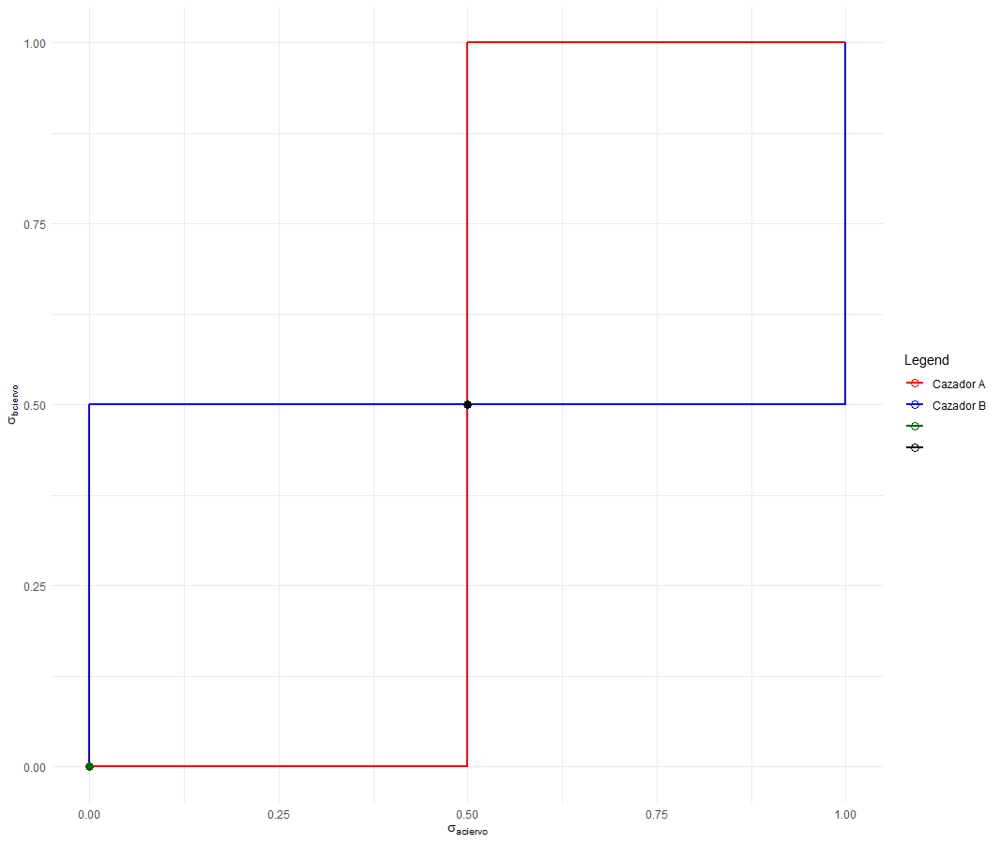
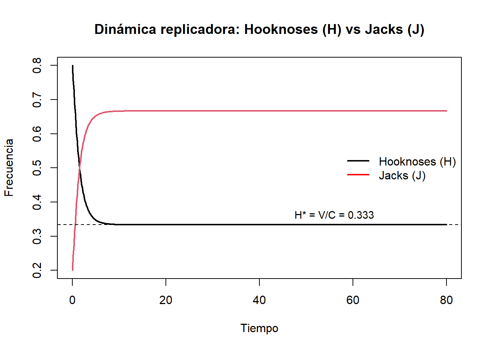

2 Capítulo 2: Fundamentos de la Teoría de Juegos y su aplicación en Ecología
La teoría de juegos es un marco matemático que se utiliza para modelar interacciones estratégicas entre agentes racionales. Este campo fue formalmente iniciado con la publicación de “Theory of Games and Economic Behavior” en 1944, un trabajo pionero de John von Neumann y Oskar Morgenstern. Inicialmente concebido para entender problemas en economía, como la formación de mercados y estrategias de negociación, pronto demostró ser útil en otras ciencias sociales y naturales. En ecología, se emplea para analizar cómo las decisiones de un organismo afectan y son afectadas por las decisiones de otros, proporcionando una visión complementaria a los modelos matemáticos tradicionales.
2.1 Conceptos fundamentales
Un juego se define por sus componentes clave, cada uno de los cuales tiene un rol crucial en la estructura del modelo:
Los jugadores son los agentes que participan en el juego. En el contexto ecológico, estos pueden ser individuos, especies o comunidades enteras que interactúan entre sí. Cada jugador tiene un conjunto de estrategias, que representan las opciones o acciones que puede tomar en un escenario dado. Estas estrategias pueden ser comportamientos específicos, patrones de uso de recursos o decisiones relacionadas con la reproducción y supervivencia.
El resultado de un juego está determinado por los pagos, que reflejan los beneficios o costos que un jugador experimenta como resultado de sus decisiones y las de los demás jugadores. Por ejemplo, en una interacción depredador-presa, los pagos podrían estar relacionados con el éxito en capturar comida o evitar ser capturado.
Un concepto central en la teoría de juegos es el equilibrio de Nash, que ocurre cuando ningún jugador puede mejorar su situación individual cambiando unílateralmente su estrategia. Este equilibrio proporciona una herramienta útil para predecir resultados estables en sistemas ecológicos complejos.
2.2 Tipos de juegos
Los juegos pueden clasificarse de diversas maneras según las características de las interacciones y los objetivos de los jugadores:
Los juegos normales (o simultáneos) son una representación de juegos que se caracteriza por describir a los jugadores, sus estrategias posibles y los pagos asociados a cada combinación de estrategias en una matriz. Cada jugador elige simultáneamente una estrategia sin conocer las elecciones de los demás, y los resultados se determinan a partir de la combinación de estrategias elegidas. Esta forma es particularmente útil para analizar juegos estáticos y de información completa, donde las decisiones se toman de forma simultánea o sin considerar secuencias de acciones.
Por otro lado, los juegos extensivos se utilizan para representar situaciones dinámicas, donde las decisiones se toman en diferentes etapas. Aquí, el juego se presenta como un árbol de decisiones, donde cada nodo representa un punto de decisión para un jugador y las ramas indican las opciones disponibles. Este formato permite modelar no solo las secuencias de decisiones, sino también la información que cada jugador tiene en cada etapa y cómo pueden reaccionar a las acciones previas de los demás. Los juegos extensivos son esenciales para analizar interacciones estratégicas en contextos donde el tiempo y el orden de las decisiones son relevantes.
En los juegos de suma cero, lo que un jugador gana equivale exactamente a lo que otro pierde. Este tipo de juegos es común en interacciones como la competencia directa por recursos limitados, donde el éxito de una especie implica la disminución de otra.
En los juegos no cooperativos, cada jugador actúa por su propio interés, sin formar alianzas ni acuerdos con los demás. Este enfoque es particularmente útil para modelar situaciones donde los organismos priorizan su supervivencia individual.
Por otro lado, los juegos evolutivos adaptan los principios de la teoría de juegos para aplicarlos a poblaciones en evolución. En este contexto, las estrategias no son elegidas de manera consciente, sino que surgen a través de procesos evolutivos como la selección natural. Este enfoque es esencial para entender cómo las interacciones entre organismos pueden dar lugar a patrones de comportamiento y adaptaciones a lo largo del tiempo.
Además, los juegos pueden ser simétricos o asimétricos, diferenciando la relación entre los jugadores y los pagos que obtienen en función de sus estrategias.
Un juego simétrico es aquel en el que los pagos dependen únicamente de las estrategias elegidas por los jugadores y no de quién las elija. Esto significa que todos los jugadores son esencialmente equivalentes en términos estratégicos: si se intercambian sus roles, los pagos permanecen iguales. Un ejemplo típico de juego simétrico es el “Dilema del Prisionero”, donde las recompensas dependen de si los jugadores cooperan o traicionan, pero no de quién toma cada decisión.
En contraste, un juego asimétrico se caracteriza porque los pagos dependen tanto de las estrategias como de quién las elige. Los jugadores tienen roles o posiciones diferentes en el juego, lo que genera diferencias en sus recompensas incluso si toman las mismas decisiones. Por ejemplo, en el juego del “Halcón-Paloma” aplicado a ecología o biología evolutiva, los roles de los jugadores (agresivo o sumiso) determinan pagos distintos según el contexto y la interacción.
En los juegos cooperativos, los participantes pueden formar coaliciones y coordinar sus estrategias con el fin de maximizar un beneficio compartido. Este tipo de juegos es relevante para modelar interacciones mutualistas, como la relación entre polinizadores y plantas, donde ambas partes obtienen ventajas claras de la colaboración. Por ejemplo, en una red trófica, las especies pueden desarrollar comportamientos cooperativos que optimicen la eficiencia en la transferencia de energía o recursos.
Por otro lado, los juegos no cooperativos se caracterizan porque los individuos toman decisiones de manera independiente, buscando maximizar exclusivamente su propio beneficio. Este tipo de juegos es común para modelar escenarios de competencia y conflicto, como la lucha entre depredadores por una presa o la competencia por recursos limitados entre especies. Estas situaciones generan un conflicto de intereses que puede resolverse mediante la adopción de estrategias óptimas individuales.
Ambos enfoques proporcionan herramientas poderosas para interpretar las interacciones complejas que ocurren en los ecosistemas, ya sea que los organismos cooperen o compitan por recursos y sobrevivencia.
2.3 Tipos de Estrategias
Los conceptos de juegos de estrategias puras y juegos de estrategias mixtas se refieren a las formas en que los jugadores pueden tomar decisiones estratégicas en un juego.
En un juego de estrategias puras, cada jugador elige una única estrategia de su conjunto de opciones y la sigue de manera determinista. No hay elementos de probabilidad ni incertidumbre en la elección. Por ejemplo, en el Dilema del Prisionero, los jugadores pueden elegir entre cooperar o traicionar. Si un jugador decide siempre cooperar, está jugando una estrategia pura. Los equilibrios de Nash pueden o no existir en estrategias puras.
Juegos de Estrategias Mixtas En un juego de estrategias mixtas, los jugadores asignan probabilidades a sus estrategias puras y eligen entre ellas según estas probabilidades. Esto introduce incertidumbre y permite mayor flexibilidad estratégica. Por ejemplo, en un juego como piedra, papel o tijera, un jugador puede asignar probabilidades iguales (1/3) a cada opción, jugando una estrategia mixta para evitar ser predecible. Los equilibrios de Nash siempre existen en estrategias mixtas, incluso si no existen en estrategias puras (por ejemplo, en juegos como piedra, papel o tijera). La recompensa para un jugador de una estrategia mixta es un promedio ponderado de las recompensas de sus estrategias puras.
Por ejemplo, si un jugador de fútbol siempre patea los penales al lado derecho del arquero, puede decirse que está utilizando una estrategia pura. Pero si en proporción patea un 70% a la derecha del arquero, y un 30% a la izquierda del arquero, es una estrategia mixta. Llamemos \[\sigma_A1\] a la probabilidad de que el jugador (A) patee a la derecha, y \[\sigma_A2\] a la probabilidad de que el jugador patee a la izquierda. Y llamemos \[\sigma_B1\] a la probabilidad de que el arquero (B) elija ir hacia la derecha, y \[\sigma_B2\] a la probabilidad de tirarse hacia la izquierda.
Entonces \[\sigma_A = (0.3, 0.7)\] y, por ejemplo, el arquero elije un palo con 50% de probabilidad siempre \[\sigma_B = (0.5,0.5)\]
2.4 Cómo se estudian los juegos: matrices de pago y equilibrio de Nash
Los juegos en teoría de juegos suelen representarse mediante matrices de pago, que describen los beneficios o costos asociados con las combinaciones de estrategias elegidas por los jugadores. En una matriz de pago:
- Cada fila representa una estrategia posible de un jugador (por ejemplo, el Jugador A).
- Cada columna representa una estrategia posible del otro jugador (por ejemplo, el Jugador B).
- Cada celda contiene dos valores: el primer valor corresponde al pago para el Jugador A, mientras que el segundo valor es el pago para el Jugador B.
| Estrategia A Estrategia B | E1 | E2 |
|---|---|---|
| E1 | a11, b11 | a12, b12 |
| E2 | a21, b21 | a22, b22 |
Por ejemplo, en un juego simple entre dos jugadores, la matriz de pago podría verse como la siguiente. Nótese además que es un juego asimétrico.
| Estrategia A Estrategia B | E1 (B) | E2 (B) |
|---|---|---|
| E1 (A) | (3, 2) | (0, 5) |
| E2 (A) | (5, 0) | (1, 1) |
Aquí: - Si el Jugador A elige E1 y el Jugador B elige E1, los pagos serán 3 para el Jugador A y 2 para el Jugador B. - Si el Jugador A elige E2 y el Jugador B elige E2, ambos jugadores obtendrán un pago de 1.
Si queremos que el juego sea simétrico, una matriz podría ser:
| Estrategia A Estrategia B | E1 (B) | E2 (B) |
|---|---|---|
| E1 (A) | (3, 3) | (0, 5) |
| E2 (A) | (5, 0) | (1, 1) |
Y esta sería una matriz de pago para un juego de suma-cero:
| Estrategia A Estrategia B | E1 (B) | E2 (B) |
|---|---|---|
| E1 (A) | (3, -3) | (2, -2) |
| E2 (A) | (-2, 2) | (-1, 1) |
2.4.1 Equilibrio de Nash
El Equilibrio de Nash es un concepto fundamental en la Teoría de Juegos que describe un estado en el cual ningún participante puede mejorar su resultado individual cambiando unilateralmente su estrategia, dado que las estrategias de los demás permanecen constantes.
Este concepto proporciona una manera de entender cómo las decisiones de los individuos interactúan y convergen hacia una estabilidad en sistemas complejos. En un juego definido por \(N\) jugadores, cada uno con un conjunto de estrategias \(S_i\) y una función de pago \(u_i: S \to \mathbb{R}\), entonces \(S = S_1 \times S_2 \times \ldots \times S_N\), es decir, el espacio de estrategias conjuntas.
Entonces un perfil de estrategias \(s^* = (s_1^*, s_2^*, \ldots, s_N^*)\) es un Equilibrio de Nash si:
\[ u_i(s_i^*, s_{-i}^*) \geq u_i(s_i, s_{-i}^*), \quad \forall s_i \in S_i, \; \forall i \in \{1, \ldots, N\}. \]
Donde:
- \(u_i\): Función de utilidad del jugador \(i\).
- \(s_i^*\): Estrategia óptima del jugador \(i\).
- \(s_{-i}^*\): Estrategias de los demás jugadores.
Para un juego de dos jugadores representado por matrices de pago \(A\) y \(B\):
- El jugador A elige \(s_A\) tal que maximiza \(u_A(s_A, s_B)\) para cada estrategia de B.
- El jugador B elige \(s_B\) tal que maximiza \(u_B(s_B, s_A)\) para cada estrategia de A.
En términos prácticos, estas condiciones se pueden inspeccionar directamente en una matriz de pago en juegos simples, mientras que en juegos más complejos, se requieren métodos numéricos o algebraicos.
2.4.2 Analizando una matriz con R
Comencemos aquí con algo básico de R, el lenguaje que utilizaremos en el resto del libro para modelar.
Podemos analizar una matriz de pago en R para identificar un equilibrio de Nash:
# Matriz de pagos del jugador A
payoff_A <- matrix(c(3, 0, 5, 1), nrow = 2, byrow = TRUE)
# Matriz de pagos del jugador B
payoff_B <- matrix(c(3, 5, 0, 1), nrow = 2, byrow = TRUE)
# Estrategias posibles
strategies <- expand.grid(A = c("E1", "E2"), B = c("E1", "E2"))
# Evaluar equilibrio de Nash
nash_equilibrium <- which.max(rowSums(payoff_A + payoff_B))
strategies[nash_equilibrium, ]## A B
## 1 E1 E12.4.2.1 Un ejemplo clásico: El Dilema del Prisionero y el Equilibrio de Nash
Veamos un ejemplo clásico que ilustra el Equilibrio de Nash: el Dilema del Prisionero, un juego que pone de manifiesto el conflicto entre los intereses individuales y el beneficio colectivo.
En este escenario, dos participantes son arrestados por un crimen y se les ofrece un trato por separado: pueden cooperar (permanecer en silencio) o traicionar al otro (confesar el crimen). La matriz de pagos, que muestra las recompensas o pérdidas para cada combinación de decisiones, es la siguiente:
| Cooperar (C) | Traicionar (T) | |
|---|---|---|
| Cooperar (C) | (2, 2) | (0, 3) |
| Traicionar (T) | (3, 0) | (1, 1) |
Aquí, los números representan los años de condena: cuanto menor es el número, mejor es el resultado para el jugador. Si ambos cooperan, reciben una sentencia moderada (2 años). Si uno traiciona y el otro coopera, el traidor queda libre (0 años) mientras el cooperador enfrenta la pena máxima (3 años). Si ambos traicionan, ambos reciben una sentencia intermedia (1 año). El equilibrio de Nash surge cuando ambos eligen traicionar, ya que cualquier cambio unilateral empeoraría el resultado del jugador que decide cambiar.
Y aquí podemos definir la estrategia dominante, que es aquella que, para un jugador, proporciona el mayor beneficio posible sin importar lo que hagan los demás jugadores. Es decir, una estrategia dominante es aquella que garantiza un mejor resultado comparado con cualquier otra estrategia del jugador, independientemente de las decisiones de sus oponentes. En el Dilema del Prisionero, la estrategia dominante es “traicionar”, porque independientemente de lo que haga el otro prisionero, ofrece la mayor recompensa independientemente de la decisión de su compañero. No todos los juegos tienen estrategias dominantes.
La eliminación por iteraciones de las estrategias dominadas (o “IESDS”, Iterated Elimination of Strictly Dominated Strategies) consiste en eliminar aquellas estrategias inferiores en sus recompensas, para quedar solamente las dominantes, en una “Estrategia de Equilibrio Dominante” (traición/traición, en nuestro ejemplo).
Este juego refleja cómo, incluso en situaciones donde la cooperación sería mutuamente beneficiosa, los intereses individuales pueden llevar a resultados subóptimos. En ecología, el Dilema del Prisionero tiene aplicaciones en conflictos por recursos compartidos, como el uso de un espacio común por diferentes especies, donde los incentivos individuales pueden llevar a la sobreexplotación y, en última instancia, a la pérdida de recursos para todos.
No todos los juegos tienen un Equilibrio de Nash. El típico juego de piedra-papel-tijera, por ejemplo, no tiene un Equilibrio de Nash.
En contextos ecológicos, el Equilibrio de Nash se aplica para analizar diversas interacciones entre especies. Por ejemplo, en escenarios de competencia por recursos limitados, las especies ajustan su consumo hasta alcanzar un punto en el que ninguna puede mejorar su acceso al recurso sin afectar negativamente a las otras. En sistemas de depredación, los depredadores optimizan sus estrategias de caza mientras las presas desarrollan comportamientos defensivos que minimizan su riesgo. En mutualismos, como el caso de polinizadores y plantas, el equilibrio se alcanza cuando el costo-beneficio de la relación es proporcional para ambas especies, garantizando la estabilidad de la interacción.
La aplicación del concepto de Equilibrio de Nash en ecología permite explorar cómo surgen patrones de comportamiento estables en comunidades biológicas, destacando las implicaciones de decisiones estratégicas en la evolución y sostenibilidad de las especies.
2.4.3 Dinámica Replicadora y Estabilidad Evolutiva
La dinámica replicadora es un modelo matemático utilizado para describir cómo cambian las frecuencias de estrategias en una población a lo largo del tiempo, bajo la influencia de la selección natural. En este enfoque, la frecuencia de cada estrategia aumenta o disminuye dependiendo de su éxito relativo en comparación con la media de la población.
Matemáticamente, para una estrategia \(i\) con frecuencia \(x_i\), la dinámica replicadora se expresa como:
\[ \frac{dx_i}{dt} = x_i (f_i - \bar{f}), \]
donde: - \(f_i\) es la aptitud de la estrategia \(i\), es decir, su éxito relativo. - \(\bar{f}\) es la aptitud media de la población, calculada como:
\[ \bar{f} = \sum_{j} x_j f_j. \]
En contextos ecológicos, esta dinámica explica cómo las estrategias evolucionan en una población. Por ejemplo, en un juego de “halcones” y “palomas” (ver mas abajo): si los halcones tienen mayor aptitud que las palomas en cierto momento, su frecuencia \(x_H\) aumentará, mientras que \(x_P\) disminuirá, y viceversa. El equilibrio se alcanza cuando las frecuencias se estabilizan, de modo que ninguna estrategia tiene una ventaja selectiva significativa.
Este modelo no solo describe la competencia entre estrategias, sino también cómo estas pueden coexistir en proporciones que reflejan un balance evolutivo.
2.4.3.1 Otro ejemplo clásico: El juego del Ciervo y la Liebre (Stag Hunt) (y un poco de matemáticas!)
El juego de ciervo y liebre (Stag Hunt) es un juego clásico en teoría de juegos que ilustra el conflicto entre la cooperación y la seguridad individual. Fue propuesto por Jean-Jaques Russeau en su libro “Discourse on Inequality”.
En este juego, dos cazadores deben decidir si colaborar para cazar un ciervo (que proporciona un gran beneficio pero requiere cooperación) o cazar una liebre (que da un beneficio menor pero puede cazarse solo).
La clave del juego está en que a) Si ambos cazan el ciervo, obtienen la mayor recompensa; b) Si un jugador caza una liebre mientras el otro intenta cazar el ciervo, el que elige la liebre obtiene una recompensa segura, mientras que el que intenta cazar el ciervo no obtiene nada. 3) Si ambos cazan liebres, obtienen recompensas moderadas, pero menores que si colaboraran.
Primero, generemos la matriz de pagos:
| Ciervo (C) | Liebre (L) | |
|---|---|---|
| Ciervo (C) | (2, 2) | (0, 1) |
| Liebre (L) | (1, 0) | (1, 1) |
Como vemos, este juego no tiene una Estrategia de Equilibrio Dominante. Si el otro jugador elije cazar Ciervo, la mejor respuesta es cazar ciervo también (2 > 1). Si el otro jugador elije cazar liebre, la mejor respuesta será cazar liebre también (1 > 0). Es decir, las decisiones de cada jugador están condicionadas por lo que espera que haga el otro jugador, y no hay estrategias dominantes.
Pero si es un juego que tiene **dos equilibrios de Nash*: Si ambos jugadores cazan ciervo (C, C) = (2,2), y si ambos jugadores cazan liebre (L, L) = (1,1).
Si lo consideramos un juego de estrategias mixtas, podemos llamar \(\sigma_A1\) a la probabilidad de que el primer cazador (A) elija la estrategia de cazar Ciervo, y \(\sigma_A2\) a la probabilidad de que el cazador elija cazar liebre. Y llamemos \(\sigma_B1\) a la probabilidad de que el segundo cazador (B) elija cazar Ciervo, y \(\sigma_B2\) a la probabilidad de que elija cazar libre.
El símbolo \(\pi\) generalmente representa una recompensa. \(\pi_A(Ciervo,Ciervo)\) representa la recompensa del cazador A cuando elije cazar Ciervo y el cazador B hace lo mismo. Y \(\\u_A\) denota la recompensa total del cazador. Así, \(\\u_A(\sigma_A, \sigma_B)\) nos informa sobre la recompensa del cazador A cuando usa la estrategia mixta \(\sigma_A\) y el cazador B usa la estrategia mixta \(\sigma_B\).
La recompensa para un jugador de una estrategia mixta es un promedio ponderado de las recompensas de sus estrategias puras. ¡Paciencia con la matemática!
\[\begin{align*} \\u_A(\sigma_A, \sigma_B) = \sigma_A,_{ciervo} [\sigma_B,_{ciervo}\pi_A)(Ciervo,Ciervo) + \sigma_B,_{liebre}\pi_A(Ciervo,Liebre)] + \\ \sigma_A,_{liebre} [\sigma_B,_{ciervo}\pi_A)(Liebre,Ciervo) + \sigma_B,_{liebre}\pi_A(Liebre,Liebre)] \end{align*}\]
O:
\[\begin{align*} \\u_A(\sigma_A, \sigma_B) = \sigma_A,_{ciervo}\sigma_B,_{ciervo}\pi_A(Ciervo,Ciervo) + \\ \sigma_A,_{ciervo}\sigma_B,_{liebre}\pi_A(Ciervo,Liebre) + \\ \sigma_A,_{liebre}\sigma_B,_{ciervo}\pi_A(Liebre,Ciervo) + \\ \sigma_A,_{liebre}\sigma_B,_{liebre}\pi_A(Liebre,Liebre) \end{align*}\]
Cuando el cazador A elije cazar un ciervo y el cazador B también, multiplicamos la recompensa del cazador A por la probabilidad de que cada cazador elija cazar un ciervo. Supongamos que el cazador A elije cazar ciervos con un 70% de probabilidad y una liebre con 30% de probabilidad, mientras que el cazador B elije cazar un ciervo con un 30% de probabilidad y liebre con 70% de probabilidad. Es decir: \(\sigma_A = (0.7, 0.3)\)$ y $\(\sigma_B = (0.3,0.7)\)
Entonces para la matriz
| Ciervo (C) | Liebre (L) | |
|---|---|---|
| Ciervo (C) | (2, 2) | (0, 1) |
| Liebre (L) | (1, 0) | (1, 1) |
Nuestra recompensa para el cazador A cuando usa la estrategia mixta \(\sigma_A\) y el cazador B usa la estrategia mixta \(\sigma_B\) será:
\[\begin{align*} \\u_A(\sigma_A, \sigma_B) = \sigma_A1[\sigma_B1\pi_A(1,2) + \sigma_B2\pi_A(1,1)] + \sigma_A2[\sigma_B1\pi_A(2,1) + \sigma_B2\pi_A(2,2)] \\ = \sigma_A,_{ciervo}[\sigma_B,_{ciervo}\pi_A(Ciervo,Ciervo) + \sigma_B,_{liebre}\pi_A(Ciervo,Liebre)] + \\ \sigma_A,_{liebre}[\sigma_B,_{ciervo}\pi_A(Liebre,Ciervo) + \sigma_B,_{liebre}\pi_A(Liebre,Liebre)] \\ = 0.7* [0.3*2+0.7*0] + 0.3* [0.3*1 + 0.7*1] \\ = 0.72 \end{align*}\]
El equilibrio de Nash se derivan utilizando estrategias puras. En vez de decir que una estrategia es pura, digamos lo mismo de otra manera: \[h_1\] es una estrategia mixta que utiliza la estrategia 1 con el 100% de probabilidad. Por ejemplo, \[h_1\] será cazar un Ciervo; la recompensa para el cazador A cuando sólo caza ciervos, puede ser calculado de la misma manera que antes:
\[\begin{align*} \\u_A(h_1, \sigma_B) = \sigma_A,_{ciervo}[\sigma_B,_{ciervo}\pi_A(Ciervo,Ciervo) + \sigma_B,_{liebre}\pi_A(Ciervo,Liebre)] + \\ \sigma_A,_{liebre}[\sigma_B,_{ciervo}\pi_A(Liebre,Ciervo) + \sigma_B,_{liebre}\pi_A(Liebre,Liebre)] \\ = \sigma_B,{ciervo}\pi_A(Ciervo,Ciervo) + \sigma_B,{liebre}\pi_A(Ciervo,Liebre) \end{align*}\]
Y la recompensa cuando el cazador A sólo caza liebres sería:
\[\begin{align*} \\u_A(h_2, \sigma_B) = \sigma_B,{ciervo} \pi_A(Liebre,Ciervo) + \sigma_B,{liebre}\pi_A(Liebre,Liebre) \end{align*}\]
Como este juego sólo tiene dos estrategias, la estrategia mixta para el Cazador B puede ser expresada como:
\[\sigma_B = (\sigma_B,_{ciervo}, \sigma_B,_{liebre}) = (\sigma_B,_{ciervo}, 1- \sigma_B,_{liebre})\]
Y la recompensa del cazador A por sólo cazar ciervos y por sólo cazar liebres serían:
\[\\u_A(h_{ciervo},\sigma_B) = \sigma_B,_{ciervo} * 2 + (1 - \sigma_B,_{ciervo}) * 0 = 2\sigma_B,{ciervo}\]
\[\\u_A(h_{liebre},\sigma_B) = \sigma_B,_{ciervo} * 1 + (1 - \sigma_B,_{ciervo}) * 1 = 1\] Si \(\\u_A(h_{ciervo},\sigma_B) > \\u_A(h_{liebre},\sigma_B)\) el cazador siempre va a cazar ciervos. Como \(\begin{align*} 2\sigma_B,{ciervo} > 1 \\ \sigma_B,_{ciervo} > \frac{1}{2} \end{align*}\), siempre que \(\sigma_B,_{ciervo}\) sea mayor a \(\frac{1}{2}\), el cazador A va a cazar ciervo. Si es menor a \(\frac{1}{2}\), el cazador A va a cazar liebre.
¿Y si \(\sigma_B,_{ciervo} = \frac{1}{2}\)? ¿Debería el cazador A decidir que hacer con una probabilidad de 50/50%, o mantener el 70/30% que venía utilizando?
Y la respuesta es: no importa. Cualquier proporción de estrategia mixta va a ser la mejor respuesta para el cazador A si \(\sigma_B,_{ciervo} = \frac{1}{2}\).

Podemos reconocer dos puntos (verdes), son los equilibrios de Nash si fueran estrategias puras. Pero además se suma un tercer punto de unión (gris) cuando \(\sigma_A,_{ciervo} = 0.5\) y \(\sigma_B,_{ciervo} = 0.5\), un equilibrio de estrategia mixta.
2.4.4 Algunos ejemplos ecológicos: estrategias en el cuidado parental y salmones Coho
Uno de los ejemplos más claros de aplicación de la teoría de juegos a la biología es el cuidado parental en aves.
Cuando dos progenitores alimentan una nidada, cada uno enfrenta un dilema estratégico: aumentar el esfuerzo de cuidado (lo que mejora la supervivencia de la nidada, pero reduce sus oportunidades futuras de reproducción) o reducir su esfuerzo esperando que el otro progenitor compense. Este conflicto puede modelarse como un juego tipo dilema del prisionero, en donde la estrategia óptima de cada individuo depende de la inversión de su pareja.
Otro caso clásico son los machos de salmón Coho (Oncorhynchus kisutch):
- Los hooknoses (grandes, territoriales) defienden hembras en un espacio delimitado.
- Los jacks (pequeños) utilizan una táctica de “sneakers”, intentando reproducirse de manera furtiva.
Este sistema se comporta como un juego Halcón–Paloma, donde la coexistencia estable de ambas estrategias es explicada por la dinámica de frecuencias.
Este sistema puede modelarse como un juego Halcón–Paloma (Hawk–Dove), donde Hooknose ≈ Halcón y Jack ≈ Paloma. La matriz de pagos típica es:
| Hooknose (H) | Jack (J) | |
|---|---|---|
| Hooknose (H) | \((V - C)/2\) | \(V\) |
| Jack (J) | \(0\) | \(V/2\) |
- \(V\): beneficio reproductivo (valor de obtener acceso a la hembra).
- \(C\): costo de pelear entre Hooknoses (solo se paga cuando ambos eligen H).
Bajo dinámica replicadora, el equilibrio mixto interior (si \(C>V\)) ocurre cuando la proporción de Hooknoses satisface: \[ p_H^\* \;=\; \frac{V}{C},\quad \text{y por tanto}\quad p_J^\* = 1 - \frac{V}{C}. \] Este equilibrio predice la coexistencia estable de ambas tácticas, como se observa empíricamente en poblaciones naturales (e.g., revisión en estrategias alternativas en peces y salmoninos) [Gross 1996].
Veamos un ejemplo en R, usando el paquete deSolve, que nos permite solucionar ecuaciones diferenciales
Esto permite simular la dinámica de frecuencias para Hooknoses (H) y Jacks (J) usando la ecuación replicadora. Podés modificar \(V\), \(C\) y las condiciones iniciales para explorar escenarios.
library(deSolve)
# --- Dinámica replicadora general para 2 estrategias ---
replicator_2x2 <- function(t, x, parms){
A <- parms$A
# x = (x_H, x_J), frecuencias (suman 1)
fitness <- as.vector(A %*% x) # pagos esperados de H y J
phi <- sum(x * fitness) # pago promedio poblacional
dxdt <- x * (fitness - phi) # replicator equation
list(dxdt)
}
# --- Parámetros del juego Hooknose (H) vs Jack (J) ---
V <- 2 # beneficio de acceso a la hembra
C <- 6 # costo de pelear entre Hooknoses (H vs H)
# Matriz de pagos:
# Filas = jugador focal, Columnas = oponente
# H J
A <- matrix(c((V - C)/2, V, # H contra H, H contra J
0, V/2 # J contra H, J contra J
),
nrow = 2, byrow = TRUE)
# --- Simulación ---
times <- seq(0, 80, by = 0.1)
x0 <- c(H = 0.80, J = 0.20) # condiciones iniciales (suman 1)
out <- ode(y = x0, times = times, func = replicator_2x2, parms = list(A = A))
out <- as.data.frame(out)
# --- Equilibrio teórico (si C > V) ---
p_H_star <- V / C
p_J_star <- 1 - p_H_star
# --- Gráfico ---
matplot(out$time, out[, c("H", "J")], type = "l", lwd = 2, lty = 1,
xlab = "Tiempo", ylab = "Frecuencia",
main = "Dinámica replicadora: Hooknoses (H) vs Jacks (J)")
legend("right", legend = c("Hooknoses (H)", "Jacks (J)"),
lty = 1, lwd = 2, col = c("black", "red"), bty = "n")
abline(h = p_H_star, lty = 2) # línea guía en H*
text(x = max(out$time)*0.7, y = p_H_star + 0.03,
labels = paste0("H* = V/C = ", round(p_H_star, 3)), cex = 0.9)
Cómo interpretar el resultado? - Si \(C > V\), la dinámica tiende a un equilibrio mixto: \((p_H^, p_J^) = (V/C,; 1 - V/C)\) - Si \(C \leq V\), el combate no es tan costoso y la estrategia Hooknose puede invadir.
Probar distintos valores de \((V, C)\) y condiciones iniciales permite ver cómo cambia la proporción de tácticas en el tiempo. Por ejemplo, fija \(V = 4\) y prueba con \(C = 5, 6, 8\) para observar cómo se desplaza \(p_H^*\) y cómo responde la trayectoria temporal.
2.5 ¿Quieres leer más?
Hofbauer, J., & Sigmund, K. (1998). Evolutionary Games and Population Dynamics. Cambridge University Press. Vincent, T. L., & Brown, J. S. (2005). Evolutionary Game Theory, Natural Selection, and Darwinian Dynamics. Cambridge University Press. Gross, M. R. (1996). Alternative reproductive strategies and tactics: diversity within sexes. Trends in Ecology & Evolution, 11(2), 92–98. McNamara, J. M., & Leimar, O. (2020). Game Theory in Biology: Concepts and Frontiers. Oxford University Press.